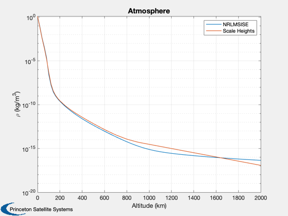

Compares atmosphere models
Compares NRL with scale heights. See also: AtmNRLMSISE, AtmDens2
Contents
%-------------------------------------------------------------------------- % Copyright (c) 2021 Princeton Satellite Systems, Inc. % All rights reserved. %-------------------------------------------------------------------------- % Since 2021.1 %--------------------------------------------------------------------------
NRL Model, using the standard C-interface
for i = 1:8 aph.a(i)=100; end input = struct('year',0,'doy',172,'sec',29000,'alt',0,'lst',0,'g_lat',60,... 'g_long',-70,'f107A',150,'f107',150,'aP',4,'ap_a',aph); z = zeros(1,24); flags = struct('switches',z,'sw',z,'swc',z); flags.switches(1) = 0; flags.switches(10)=1; % Does not use daily ap for i = 2:24 flags.switches(i)=1; end alt = linspace(0,2000); rho = zeros(1,length(alt)); input.ap_a = aph; for k = 1:length(alt) input.alt = alt(k); flags.switches(1) = 0; output = AtmNRLMSISE( 'gtd7', [], input, flags ); rho(k) = output.d(6); end rho2 = AtmDens2( alt ); Plot2D(alt,[rho*1000;rho2],'Altitude (km)','\rho (kg/m^3)','Atmosphere','ylog') legend('NRLMSISE','Scale Heights') %-------------------------------------- % $Date$ % $Id: 8a1cfb2646a0de052bbdeca5d1db63192847f74d $